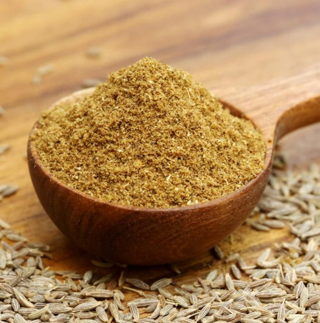
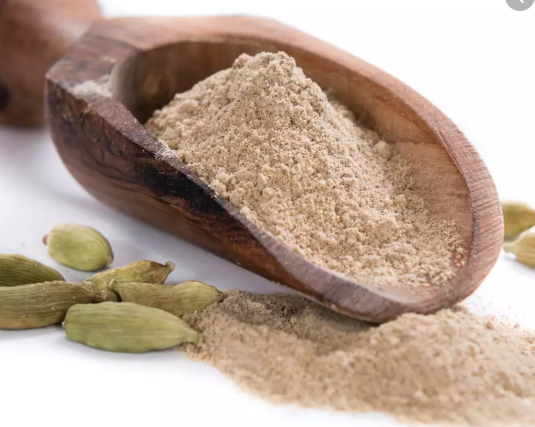
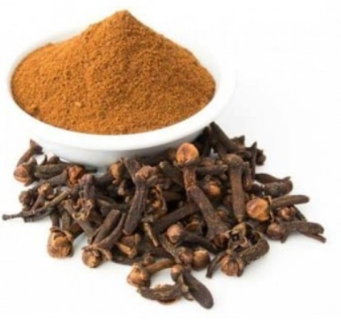
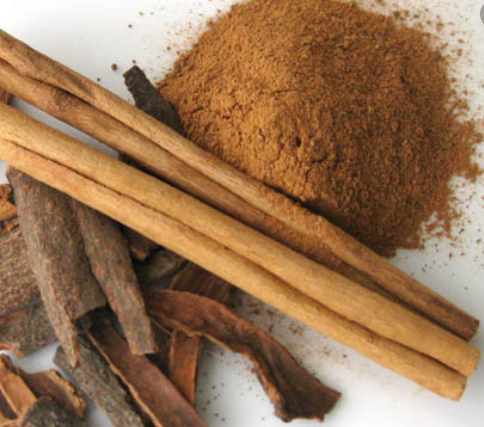
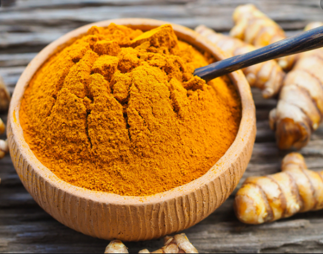
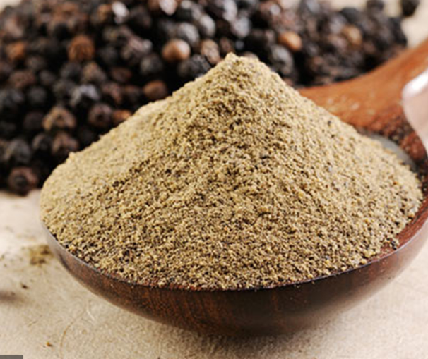

Cumin Powder£5.00 Cumin is used mostly as mixed spices which ads a characterisitic smoky smells and taste to indian dishes. Which can use noticed by their brown seeds and intense fragrance. |

Cardimom Powder£5.00 It is mostly used for indian dessert to give it a sweet spices taste, and can be used for indian spicy curry or biryani dishes to allow the dish abosrve the fragrence green taste. |

Clove Powder£5.00 Clove is a common spice in Inidan cooking, it has a strong medicinal flavour of clove comes from the concentration of essential oils, clove are type of flower and the oils are pressed out of them before they are dried and used for cooking. |

Cassia Bark£5.00 Cssia bark is also known as cinnamon, which comes from cinnamon tree, cassia has a sweet sower taste to it, which ads a fragrent to the dish and allowing the dish to have exceptional tatse and smell. |

Termeric Powder£5.00 Turmeric is yellow and like ginger but its more yellow and dry. It is known for health benefits and gives deliciouse colour to the food, it has a strong taste to wake you up from your desires. |

Black Pepper Podwer£5.00 Black pepper is native to almost every country it one of the most popular and used by many, it gives that salty taste to any dish and it can get attached to any dish to make it more ellegant and delicious. |